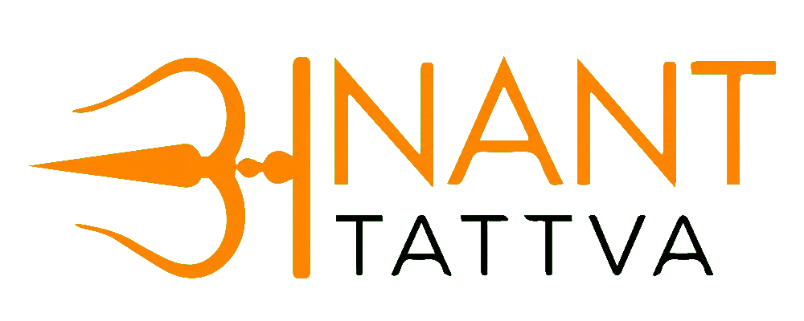

A complete product, business-logic and technical blueprint—from customer acquisition to compliance delivery, connected securely with CCP.
This CRM is a full-stack operational platform that joins lead acquisition, client onboarding, quotation, approval, compliance/annual-return processing, user/team administration, notifications and scheduled work. It uses a React single-page application, an Express service layer, MongoDB persistence and a protected integration boundary with CCP.
| Product & navigation | What each screen contains and why it exists |
| Business logic | Status transitions, ownership rules, approvals and reports |
| Architecture | Frontend → API → database → CCP data movement |
| Data dictionary | Meaning of major entities and fields |
| Update register | Verified Git changes plus the profile-menu fix in this working tree |
| Recommendations | Enterprise-hardening backlog, explicitly separated from current behavior |
| Route | Page | Meaning | Protection |
|---|---|---|---|
/ | Login | Email-based OTP request entry | Public |
/verify | Verify OTP | OTP verification, token and user session creation | Public |
/dashboard | Dashboard | Role-aware operational/sales intelligence | JWT |
/dashboard/users | User Management | People, roles, teams and reporting hierarchy | JWT + admin actions gated by API |
/pending-approval | Approval Desk | Client and quotation approval queue | JWT; mutation admin-gated |
/notifications | Notifications | Publish, filter, pin and download notices | JWT; editing privileged |
/calendar | Calendar | Todos, follow-ups, assignment and history | JWT |
/sales/lead-generation | Leads | Lead capture, import/export and follow-up | JWT |
/sales/client-master | Clients | Client directory and onboarding records | JWT |
/sales/quotations | Quotation | Create/update commercial proposals | JWT |
/sales/client-data-processing/:clientKey/:annualYear | Annual workspace | Year-specific compliance data processing | JWT |
Sidebar groups work by Operations and Sales. Topbar provides information, notification indicator, identity, Profile Settings and Logout. DashboardShell coordinates responsive sidebar state, collapsed desktop mode and session logout.
POST /auth/request-otp./auth/verify-otp.| Term | Explanation |
|---|---|
| JWT | A signed session token sent as Authorization: Bearer …. Backend verifies it and loads the active user. |
| OTP expiry | A verification code is useful only within a defined time window, reducing replay risk. |
| Active user check | Even a structurally valid token is rejected when its user is missing or inactive. |
| Role guard | requireRoles returns HTTP 403 when the authenticated role cannot perform an action. |
JWT_SECRET; remove reliance on the development fallback, add refresh/session revocation, audit login events and enforce OTP throttling.The dashboard is role-aware: it converts raw leads, clients, quotations, approvals, annual returns and calendar follow-ups into management views. Operations and Sales users see different KPIs and task-oriented panels.
| Report/KPI | Meaning | Primary source | Expected action |
|---|---|---|---|
| Lead volume | Total visible lead records | CRM + normalized CCP leads | Review capacity and ownership |
| Today leads | Leads created/dated today | Lead timestamps/date | Immediate qualification |
| Conversion | Lead/client progression indicator | Lead and client sources | Improve pipeline movement |
| Pending approvals | Items waiting for authorized decision | Clients and quotations | Approve/reject with remarks |
| Annual progress | Year-wise compliance processing state | AnnualReturn | Complete missing sections/review |
| Follow-ups | Scheduled customer touchpoints | Calendar + lead history | Open Calendar and complete |
The Approval Desk is a control gate between record preparation and operational acceptance. It combines client and quotation queues and allows authorized admins to decide individually or in bulk.
| Component | Purpose |
|---|---|
| Summary metrics | Fast count of waiting client and quotation decisions. |
| Filters/tabs | Separate work type and status so reviewers focus on the right queue. |
| Detail review | Shows submitted record context before the decision. |
| Approve/reject | Updates approval status; API checks the user's admin role. |
| Approve all | Bulk-completes pending approvals through dedicated PATCH endpoints. |
| Reminder service | Backend scheduler supports pending approval reminders after database startup. |
Authenticated users can list notices. Create/update is restricted to Admin, Super Admin and Manager. Dedicated secret-protected endpoints allow CCP to list or synchronize notices, while outbound notification sync uses a configured CCP endpoint.
onOpenProfile to the shared shell, mounts ProfileModal, supports profile/password updates and maintains user state in local storage. The previously unresponsive Profile Settings click is fixed.Calendar joins customer follow-ups with internal tasks. It offers month/week/day contexts, agenda/timeline views, assignment, revision, completion remarks and history.
| Rule | Result |
|---|---|
| Status = completed | Item receives completed tone and 100% progress. |
| Scheduled date before today | Open item becomes overdue and demands attention. |
| History exists | Item can be represented as revised. |
| Assignment | User and reason are captured to support accountability. |
| Storage | Server CRUD is backed by CalendarItem; local storage is used as resilience/cache behavior. |
Client and lead selectors merge CRM records with CCP results, so scheduled work can reference the shared operational universe.
User Management controls identity, access level, team placement and reporting hierarchy. Admins can create and edit users, inspect details, activate/deactivate accounts and create teams.
| Role | Meaning | Typical scope |
|---|---|---|
| Operation | Executes operational work | Assigned clients, tasks and compliance work |
| Admin | System administrator | Users, teams, approvals and broad visibility |
| Super Admin | Highest configured administrative role | Organization-wide control |
| Manager | Supervisory role | Team/linked user visibility and notices |
| Compliance | Compliance manager/reviewer | Annual and regulatory workflow |
| Sales | Commercial pipeline owner | Leads, clients, quotes, follow-ups |
| Accounts | Financial participant | Quotation/financially relevant views |
teamId assigns organizational unit; managerId defines direct reporting; operationHeadId provides operational leadership scope; createdBy records provenance. Active state immediately affects authentication.
CRM can push create/update user payloads and team payloads to CCP. The returned ccpUserId is saved when synchronization succeeds. Shared-secret endpoints also permit controlled inbound synchronization.
This page captures prospects, qualifies them and schedules the next commercial action. It combines manually created CRM leads, Excel imports and normalized CCP leads.
.xlsx/.xls headers are mapped into lead fields.Client Master is the authoritative operational directory after a prospect becomes a client. It supports detailed onboarding, administrative controls, approval, import and annual compliance work.
| Group | Examples and meaning |
|---|---|
| Basic identity | Legal/trade name, client unique ID, categories and industry. |
| Registered address | Address, city, state and PIN for formal correspondence. |
| Contact | Named contact, designation, email and mobile details. |
| Regulatory | GST, CPCB registration, EPR/PIBO categories and related compliance data. |
| Admin controls | Approval status, visibility status and assigned user. |
| Workflow | Draft allows continued preparation; submitted enters controlled processing. |
The directory merges CRM and CCP clients, while utility functions normalize nested client data and stable unique identifiers. Excel bulk import supports high-volume onboarding.
Follow-ups and todos share Calendar data. Annual-return history opens year-specific processing. Client approval is controlled through the Approval Desk.
Quotation turns a qualified lead into a structured commercial offer. It retains lead context, line items, pricing and approval state.
| Object | Meaning |
|---|---|
| Lead details | Commercial recipient and source context. |
| Quote items | Individual services/products and financial values. |
| Status/workflow | Draft, submission and approval progression. |
| Approval remarks | Reviewer rationale for decision. |
The page can consume CCP lead options. Backend exposes list, create, update, individual approval and approve-all-pending endpoints.
Annual Returns provides year-wise regulatory processing for each client. The workspace remembers active tab/section, filing data, approval workflow and saved time.
| Tab/part | Purpose |
|---|---|
| Basic Info | Client identity and year context required for the filing. |
| Financials | Quotation, SLA, receipt and finance-related dates/values. |
| Data | Structured regulatory inputs and evidence. |
| Part A — Client Data | Core applicant and registration context. |
| Part B — Consent Details | Water/air consent validity and related records. |
| Part C — Raw Data & Interaction | Operational source data and interactions. |
| Part D — Plant & Declaration | Facility and formal declaration inputs. |
| CPCB Letter | Authority-specific letter preparation and dates. |
GET /api/ccp/leadsGET /api/ccp/clientssourceLeadId, lead code, unique client key and CCP IDs preserve identity; cached/fresh CRM lists are merged.| CCP event/data | CRM handling | Where the user sees it |
|---|---|---|
| New CCP lead | Backend exposes it through the authenticated CCP lead endpoint; frontend normalizes company, status, categories, address, contact, source and assignment fields. | Lead Generation list, Dashboard lead reports/KPIs, Quotation lead selector and Calendar lead selector. |
| CCP client | Backend returns the CCP client collection; client utilities derive a stable unique ID, read nested client data and merge it with CRM client records. | Client Master directory, Dashboard client analytics and Calendar client selector. |
| Same identity in CRM and CCP | Merge/identity utilities reduce duplicate display by using source IDs, CRM IDs, CCP IDs, lead codes and client unique keys. | Unified page dataset rather than separate disconnected tables. |
| CCP temporarily unavailable | Pages use cached/fresh-list helpers or local CRM data where implemented and surface source/failure state. | CRM remains usable with the latest available data, subject to page behavior. |
| Entity | Default sync target | Trigger |
|---|---|---|
| User | /api/crm/users/sync | Admin create/update and explicit sync |
| Team | /api/crm/teams/sync | Team create/update synchronization |
| Notification | /api/crm/notifications/sync | Notification create/update synchronization |
CCP_SHARED_SECRET is transmitted as x-ccp-secret for protected machine-to-machine calls. Human browser calls still require JWT. Sync helpers return structured success/failure results so CRM actions can complete while reporting CCP sync status.
| Entity | Important fields | Relationship / purpose |
|---|---|---|
| User | email, CRM/CCP IDs, role, team, manager, operation head, active | Identity, access and reporting hierarchy |
| Team | name, description, active | Organizational grouping |
| Lead | leadCode, sourceLeadId, company, status, contacts, assignment, follow-up | Prospect pipeline |
| Client | selectedLead, adminControls, data, workflowStatus | Approved/operational customer record |
| Quotation | lead details, items, status, approval | Commercial offer |
| AnnualReturn | clientKey, annualYear, sections, filings, approvalWorkflow | Year-specific compliance processing |
| PendingApproval | entity/type/status/reminders | Approval control and reminder state |
| Notification | title, description, tag, status, attachment, pinned | Organizational communication |
| CalendarItem | type, schedule, assignment, status, history | Todo and follow-up execution |
| Resource | Methods | Responsibility |
|---|---|---|
| Auth | POST OTP/resend/verify; GET/PUT me; admin user CRUD/sync | Identity, session and user administration |
| Leads | GET, POST, POST bulk, PUT :id | Pipeline records and imports |
| Clients | GET, POST, bulk, PUT, PATCH approval, annual return | Onboarding, approval and client data |
| Quotations | GET, POST, PUT, PATCH approval/bulk approval | Commercial workflow |
| Annual returns | GET | Cross-client year/status listing |
| Notifications | GET, POST, PUT; CCP list/sync | Communication content and exchange |
| Calendar | GET, POST, PUT, DELETE | Persistent todos and follow-ups |
| Teams | GET, POST; CCP list/sync | Organization structure |
| CCP proxy | GET leads/clients | Authenticated external-data access |
401 means token/secret missing or invalid. 403 means identity is valid but lacks role permission. 503 reports database startup/unavailability. Controller validation failures use client-error responses; unexpected failures use server-error responses.
| Area | Current report/view | Decision supported | Export |
|---|---|---|---|
| Dashboard | Role KPIs, pipeline, operations, follow-up rows | Where management attention is needed | On-screen drill-down |
| Leads | Filtered list, status/ownership, follow-up history | Qualification and conversion management | XLSX |
| Clients | Directory, approval and annual history | Onboarding and delivery readiness | XLSX import; directory reporting |
| Approvals | Pending client/quote queues and totals | Maker-checker turnaround | Operational view |
| Calendar | Today, upcoming, overdue, completed, timeline | Execution and SLA discipline | On-screen |
| Annual Return | Year/status/client workspace progress | Compliance completion and review | Structured saved record |
| Notifications | Active/inactive, tag and pinned views | Communication governance | Attachment download |
| Date | Commit | Verified change theme |
|---|---|---|
| 11 Jul 2026 | f3d0f47 | CRM dashboards, annual workspace and attachments improved |
| 10 Jul 2026 | 50bce18 | Accounts role added; calendar items persisted |
| 08 Jul 2026 | 8fd4a53 | Stale SPA asset caching prevented on Vercel |
| 08 Jul 2026 | ea91b9f | Production verify-page chunk loading fixed |
| 08 Jul 2026 | 0e39ad1 | Dashboard UI and approval flows polished |
| 02 Jul 2026 | 223e70d | Dashboard donut charts animated |
| 02 Jul 2026 | 25e889a | Scroll reset on route changes |
| 02 Jul 2026 | aefa869 and related | Annual review drawer content, overlay, sizing and scroll behavior improved |
| 13 Jul 2026 | Working tree | Notifications and Calendar Profile Settings now open and provide save/password/logout flow |
| Gate | Target |
|---|---|
| Unit tests | Controllers, normalization, permission scope and calculations |
| API integration tests | Auth, roles, CRUD, approval transitions, CCP secrets |
| UI tests | Login, profile, lead-to-client, quotation approval, annual review |
| Contract tests | CRM ↔ CCP payloads and version compatibility |
| Performance tests | Large lead/client lists, Excel import and dashboard aggregation |
| Monitoring | Structured logs, error tracking, health checks, latency and sync metrics |
| Priority | Recommendation | Business outcome |
|---|---|---|
| P0 | Move all fallback secrets out of code; rotate JWT/CCP credentials; validate production environment at boot | Reduces critical security exposure |
| P0 | Introduce immutable audit events for login, user changes, approvals and annual-return decisions | Accountability and compliance evidence |
| P1 | CCP outbox, retry/backoff, idempotency and reconciliation dashboard | Reliable cross-system consistency |
| P1 | Server-side pagination, filtering and indexed dashboard aggregation | Scales beyond browser-sized datasets |
| P1 | Schema validation/versioning for nested Client and AnnualReturn objects | Data quality without losing form flexibility |
| P1 | Object storage for attachments with signed URLs, virus scan and retention rules | Secure document handling |
| P2 | Formal RBAC permission matrix instead of role-name checks alone | Fine-grained, auditable authorization |
| P2 | BI warehouse/read model for executive reports | Fast analytics without transactional load |
| P2 | CI/CD gates: lint, test, build, dependency scan and migration checks | Safer frequent releases |
| P3 | Accessibility, localization and design-system component governance | Consistent enterprise UX |
| Term | Plain-language explanation |
|---|---|
| CRM | System of record for customer acquisition and service operations. |
| CCP | Connected external platform exchanging leads, clients, users, teams and notifications with CRM. |
| SPA | Single Page Application; navigation updates the view without reloading the whole website. |
| API | Defined interface through which frontend or external systems read/change data. |
| REST | Resource-oriented HTTP design using GET, POST, PUT, PATCH and DELETE. |
| JWT | Signed authentication token proving the browser session's identity. |
| RBAC | Role-Based Access Control: permissions depend on the user's assigned role. |
| OTP | One-Time Password used for time-bound login verification. |
| PIBO | Producer, Importer and Brand Owner classification used in EPR compliance work. |
| EPR | Extended Producer Responsibility regulatory/compliance framework. |
| CPCB | Central Pollution Control Board; authority context for registration and letters. |
| SPOC | Single Point of Contact responsible for coordination. |
| Maker-checker | One person prepares; another authorized person approves. |
| Normalization | Converting different source field names/shapes into one consistent structure. |
| Idempotency | Repeating the same integration request does not create duplicate business effects. |
| Outbox | Reliable table/collection of integration events waiting to be delivered. |
| Index | Database structure that accelerates lookup and may enforce uniqueness. |
| Mixed field | Flexible MongoDB object used where form structure can evolve. |
| Configuration | Purpose | Production expectation |
|---|---|---|
MONGO_URI / DB_NAME | MongoDB connection and database | Private managed secret and restricted network |
JWT_SECRET | Signs/verifies sessions | Long rotated secret; never fallback |
CLIENT_ORIGIN | CORS allowed origins | Exact production domains |
CCP_SHARED_SECRET | Machine trust between CRM and CCP | Rotated vault-managed secret |
| CCP sync URLs | User/team/notification delivery | Environment-specific HTTPS endpoints |
| Mail settings | OTP and reminder email | Authenticated provider, SPF/DKIM/DMARC |
This report was produced by inspecting the application routes, navigation constants, page components, service endpoints, CCP adapters, Express application, backend routes/controllers, Mongoose models, authentication middleware, synchronization utilities, tests, package manifests and Git history.
npm.cmd run build completed successfully with Vite 5.4.21 and 2,667 transformed modules after the Profile Settings fix.| Area | Business owner | Technical owner | Review frequency |
|---|---|---|---|
| Sales pipeline | Sales Head | CRM Engineering | Monthly |
| Client & annual compliance | Operations/Compliance | CRM Engineering | Monthly |
| Approvals | Admin/Management | CRM Engineering | Quarterly |
| CCP integration | Product Operations | Integration Owner | Monthly |
| Security & access | System Owner | Security/Engineering | Quarterly |
This roadmap separates where a record is generated from where it is consumed. Both CCP and CRM can originate business data; CRM presents one unified operational view.
New Leads are created in CCP. Client/Client Master records are also generated or made available in CCP with CCP source identity.
Users can create Leads and Clients directly in CRM or bring them through controlled Excel import.
GET /api/ccp/leadsGET /api/ccp/clients
The authenticated backend retrieves CCP records without exposing the source directly to an unauthenticated browser.
CCP and CRM field variations become one shape. Source ID, CCP ID, lead code, CRM ID and client unique key identify records and reduce duplicate display.
A single high-quality executive roadmap replaces the four decorative infographic screens. It shows the real business sequence and the control attached to every stage.
CCP, CRM manual entry or Excel import creates the opportunity.
Owner, status, category and follow-up establish sales readiness.
Scope and commercial values pass through maker-checker control.
Client Master becomes the approved operational account record.
Annual data, review, approval and regulatory output complete the cycle.
This enterprise map translates the approved whiteboard workflow into a production-readable architecture. It separates platform entry, people governance, commercial processing, client compliance, shared approvals and supporting communication.
Old enterprise topology UI retained with the approved whiteboard workflow: CCP is the external source, CRM governs people and records, and both commercial and compliance work converge at one approval control.